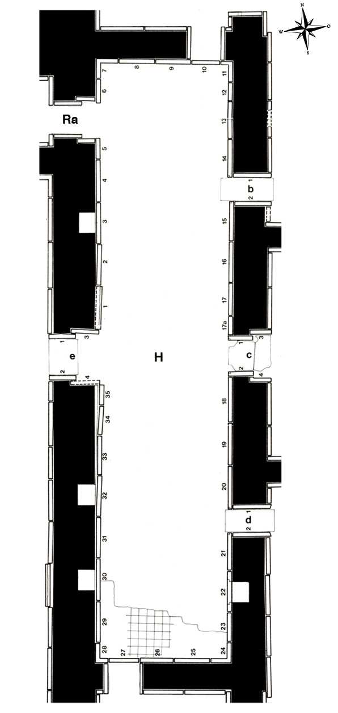

Room H
Room H was part of a reception suite that included Rooms G-O, and it connected Room G to the other areas of the suite. Layard first discovered this room in June of 1846, but at first excavated only the upper parts of four or five slabs, before returning to work on Room G. He continued the excavation in mid-August, after taking time off to prepare earlier finds for transport to Baghdad and further down the Tigris to Basra. The reliefs of Room H were of a quality comparable to those in G. Layard found 36 slabs within the room itself, plus 10 more in the entrances. Four of the former had “recesses” in their upper halves, that Layard could not explain. The same features were also found in some other rooms (I, J, L, M in the eastern wing; U, V, W, X in the southern wing) and were identified by Sobolewski (Fs Hrouda 262-264) as air ducts that provided ventilation for those chambers that did not have direct access to the outside. Some of the reliefs from Room H were given away by Layard (H-9, H-25), Rawlinson (H-1, H-2), and Rassam (H-12); five are lost with the exception of some small fragments (H-8, H-13, H-26, H-c-1), while others remained in situ, most of those badly damaged (H-15 - H-22, H-d-1).
Click on H in the middle of the room to see all panels positioned in their respective walls, or on the individual panels along the inner walls and in the entryways to go to CDLI pages associated with them.
 |
Relief Slabs by Collection (duplication results from individual fragments in different places)
Amherst College, Amherst, Masssachusetts, USA |